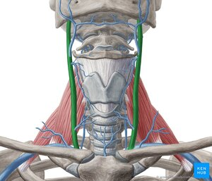

Home
Reports
⇐
͵ⲃ̅ϥ̅
⇒
Reset
Dev
ϧⲣⲱϯ
B
(noun)
(
noun
)
anatomy
jugular veins

2090-1-1
complete
631b
ϧⲣⲱϯ
nn,
jugular veins
(dual AZ 47 43): K 76 (all MSS)
ⲛⲓϧ.
وريدان
.
Greek:
view
ⲫⲗⲉⲯ
S
Subst.
(En.)
vein
DDGLC
1499
C10870
view
ⲁⲣⲧⲏⲣⲓⲁ
S
Subst.
(En.)
artery
DDGLC
1500
C8449
Homonyms:
view
plural:
ϧⲣⲟϯ
B
plural:
ϩⲗⲁϯ
F
plural:
ϧⲣⲱⲧ
O
(
noun masculine
) child, young [
υιος
,
τεκνον
]
2089